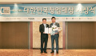

이디야 뉴스
공지사항
공지사항 내역 입니다.
언론 속 이디야
이디야의 소식을 전해드립니다.

- 1
- 2
- 3
- 4
홍보영상
홍보영상 내역 입니다.
수상내역
이디야의 영광스런 수상내역입니다.
2019
-
11 고용 노동부 주관. 일 ・ 생활 균형 우수 기업 선정
 서울경제에서 주최하는 대한민국 창업대상 CEO 부문에 국무총리상을 수상하였습니다 수상일
-
10커피 산업 공로상 농림축산식품부 장관상 수상

서울경제에서 주최하는 대한민국 창업대상 CEO 부문에 국무총리상을 수상하였습니다 수상일
-
06이디야커피 대한민국 창업대상 국무총리상 수상
서울경제에서 주최하는 대한민국 창업대상 CEO 부문에 국무총리상을 수상하였습니다 수상일
2018
-
12소비자중심경영(CCM) 인증 획득
서울경제에서 주최하는 대한민국 창업대상 CEO 부문에 국무총리상을 수상하였습니다 수상일
2017
-
06 대한민국 창업대상 산업통상자원부 장관상 수상
서울경제에서 주최하는 대한민국 창업대상 CEO 부문에 국무총리상을 수상하였습니다 수상일
-
12사회보험 사각지대해소 '특별상' 수상
서울경제에서 주최하는 대한민국 창업대상 CEO 부문에 국무총리상을 수상하였습니다 수상일